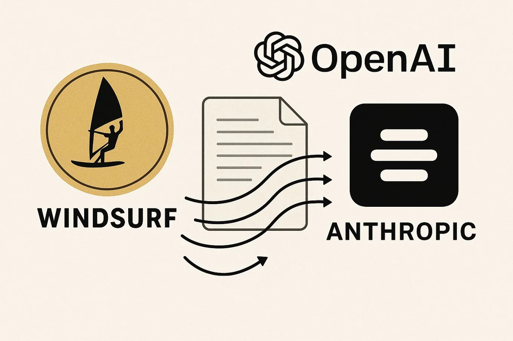

Why Windsurf kept Claude after its $3 billion acquisition
Originally posted on LinkedIn, June 6, 2025.
OpenAI recently acquired AI coding startup Windsurf for $3 billion. Soon afterward, Anthropic blocked Windsurf’s access to its main models.
The move made sense. Windsurf now belonged to Anthropic’s competitor. But it also caused a major shock to the team and the product because Claude leads the market in code understanding and is clearly the industry’s preferred model for development.
Windsurf responded in just five days. It implemented third-party solutions and added workarounds that let users keep working with Claude, even though the new setup was expensive and complex.
Instead of switching to models from OpenAI, its new owner, Windsurf chose to keep paying for indirect access to Anthropic’s models. There is no clearer way to say “I trust you” than spending more money to keep using your product.
The episode shows what happens when AI companies take an aggressive competitive approach. It can affect innovation and exposes how dependent startups are on their technology providers.
There is never a dull moment in generative AI.
